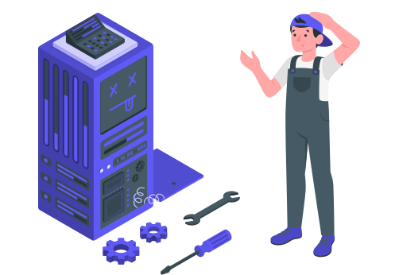

<ion-content [fullscreen]="true" id="root" class="min-h-100vh flex grow bg-slate-50 dark:bg-navy-900">

  <main class="grid w-full grow grid-cols-1 place-items-center">
    <div class="max-w-md p-6 text-center">
      <div class="w-full">
        
      </div>
      <p class="pt-4 text-7xl font-bold text-primary dark:text-accent">
        Sorry!
      </p>
      <p class="pt-4 text-xl font-semibold text-slate-800 dark:text-navy-50">
        Under Development
      </p>
      <p class="pt-2 text-slate-500 dark:text-navy-200">
        the page you are loading may be under development
      </p>
    </div>
  </main>
</ion-content>
